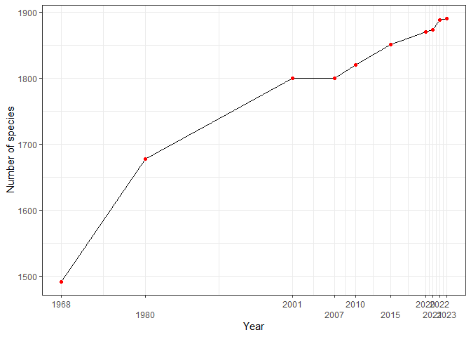

The avesperu package opens the door to Peru’s extraordinary avian world, comprising approximately 1,892 species, making it one of the world’s most diverse bird-rich countries. This comprehensive R package provides users with access to the meticulously documented “List of the Birds of Peru” by M. A. Plenge. It’s worth noting that avian taxonomy is dynamic, with dramatic changes over time. Bird species categorization has been refined based on articles, published photographs, sound recordings from accredited institutions, and more.
The species list follows the taxonomic classification endorsed by the South American Checklist Committee (SACC), which assigns species codes reflecting their residency status, endemism, migratory behavior, vagrancy, introductions, extirpation, and hypothetical presence. As of now, SACC is in the process of recognizing certain subspecies as full species, a development that will alter the species count. The “H” category, which signifies hypothetical species, is now ranked fifth in South America, following Argentina, Bolivia, Colombia, and Ecuador. It is anticipated that this ranking could diminish further if well-documented records are published.

Suggested citation:
citation("avesperu")
#> To cite avesperu in publications use:
#>
#> Santos - Andrade, PE. (2023). avesperu: Access to the List of Birds
#> Species of Peru. R package version 0.0.0.1.
#>
#> A BibTeX entry for LaTeX users is
#>
#> @Manual{,
#> title = {avesperu: Access to the List of Birds Species of Peru},
#> author = {Paul E. Santos - Andrade},
#> year = {2023},
#> note = {R package version 0.0.0.1},
#> }
#>
#> To cite the avesperu dataset, please use: Plenge, M. A. Version
#> [07/06/2023] List of the birds of Peru / Lista de las aves del Perú.
#> Unión de Ornitólogos del Perú:
#> https://sites.google.com/site/boletinunop/checklistInstallation
You can install the development version of avesperu like so:
pak::pak("PaulESantos/avesperu")Usage
Here’s a quick example of how to use the avesperu package:
library(avesperu)
#> This is avesperu 0.0.0.1
splist <- c("Falco sparverius",
"Tinamus osgodi",
"Crypturellus sooui",
"Thraupisa palamarum",
"Thamnophilus praecox")
search_avesperu(splist = splist, max_distance = 0.05)
#> name_submitted accepted_name english_name spanish_name
#> 1 Falco sparverius Falco sparverius American Kestrel Cernícalo Americano
#> 2 Tinamus osgodi Tinamus osgoodi Black Tinamou Perdiz Negra
#> 3 Crypturellus sooui Crypturellus soui Little Tinamou Perdiz Chica
#> order family status dist
#> 1 Falconiformes Falconidae nill 0
#> 2 Tinamiformes Tinamidae nill 1
#> 3 Tinamiformes Tinamidae nill 1- The package not only provides access to the list of bird species recorded in Peru but also excels in resolving potential typos or variations in species names through fuzzy matching. It ensures accurate retrieval by intelligently recognizing and accommodating slight discrepancies in the input names, making it a robust tool for working with diverse and sometimes inconsistent datasets.
splist <- c("Falco sparverius",
"Tinamus osgodi",
"Crypturellus sooui",
"Thraupisa palamarum",
"Thraupisa palamarum",
"Thamnophilus praecox")
search_avesperu(splist = splist, max_distance = 0.1)
#> The following names are repeated in the 'splist': Thraupisa palamarum
#> name_submitted accepted_name english_name spanish_name
#> 1 Falco sparverius Falco sparverius American Kestrel Cernícalo Americano
#> 2 Tinamus osgodi Tinamus osgoodi Black Tinamou Perdiz Negra
#> 3 Crypturellus sooui Crypturellus soui Little Tinamou Perdiz Chica
#> 4 Thraupisa palamarum Thraupis palmarum Palm Tanager Tangara de Palmeras
#> order family status dist
#> 1 Falconiformes Falconidae nill 0
#> 2 Tinamiformes Tinamidae nill 1
#> 3 Tinamiformes Tinamidae nill 1
#> 4 Passeriformes Thraupidae nill 2